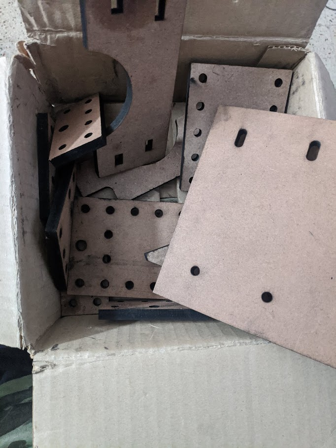

Mini 3 axis CNC mill
Like all my other projects I try to minimize the cost this following plotter costed ~16000 rupees of which spindle was nearly 9000 rupees, NEMA 23 motors costed around 3500 rupees in total. As you can see and probably tell this machine looks very similar to OpenBuilds Mini mill. I had 8 meters of aluminum extrusion lying around that I had bought for something else but couldn't use these extrusion for that project and also participated in tworks hackathon during the same time. I decided to build a cnc mill and then laser-cut the required parts for carriage, bed, etc.
I can call this design a bit rushed as the rigidity of this machine is very bad and worse than i expected. My initial plan was to be able to cut aluminum on this. Woods and plastics is what this cuts the best.
Here's the video of laser cutting of the parts
I went to visit the Tworks facility, they let us inside despite COVID restrictions.
Assembly
Building the cnc took longer than I ever imagined as the spindle was very expensive of amazon for most of the time, I didn't feel right buying the spindle (makita rt700c) for more than 8000, I enquired price from a local vendor he said it would cost about 7500 rupees, but later he said it wasn't possible to find stock of the model as its not sold very frequently. Then I had my exams so I had to hold off the project for a few months. After killing several A4988's this machine was working.
I was initially using NEMA 17 from my pen plotter but as expected it wasn't delivering enough power for my woodworking operations. I later switched to NEMA 23 10.1Nm torque, got them for cheap from robokits. These motors are quite capable. The Z-axis is mounted to the table that I welded a while ago. Its consists of a wood sheet in the back where I screwed the Z-axis carriage. It makes the XZ axes pretty rigid, I'm quite happy with this.
Laser cut parts

Testing the fit of the my assembly to check if all fits right.
Design problems
Just like that pen plotter V2 the only problem with this build is probably the linear bearing as I have standard ball bearings rolling on aluminum extrusion. This causes the X-axis to flex when using the mill under load. The dimensional accuracy of milled parts are around +/-0.5mm. Although I haven't used this CNC to make lots of parts on this mill.